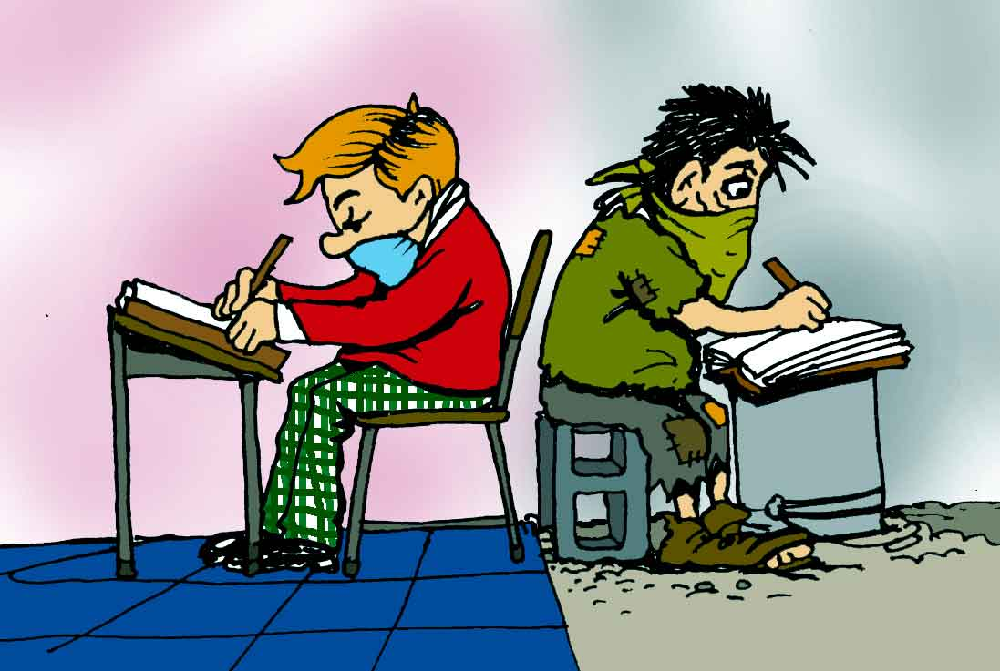

La Falta de Inclusión en las Escuelas Hoy en Día

A pesar de los avances en la legislación educativa, la falta de inclusión sigue siendo un problema importante. Según estudios recientes, una gran parte de los estudiantes con discapacidades no tiene acceso a un entorno educativo adaptado a sus necesidades. Además, los estudiantes de diferentes orígenes culturales o lingüísticos pueden enfrentar barreras que limitan su integración efectiva.
Estadísticas
25% de los estudiantes con discapacidades no reciben la ayuda adecuada:
Más del 30% de los estudiantes inmigrantes no se sienten aceptados:
Testimonio
“Juan, estudiante con discapacidades auditivas, comenta:
A menudo siento que no me entienden y que las clases no están hechas para mí.”